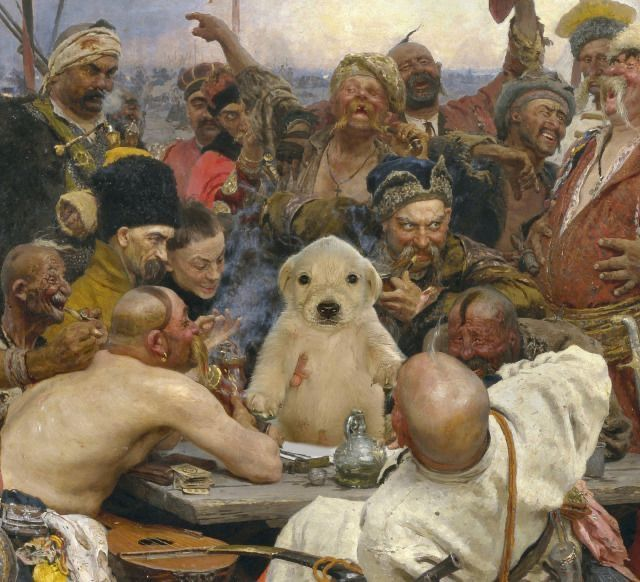
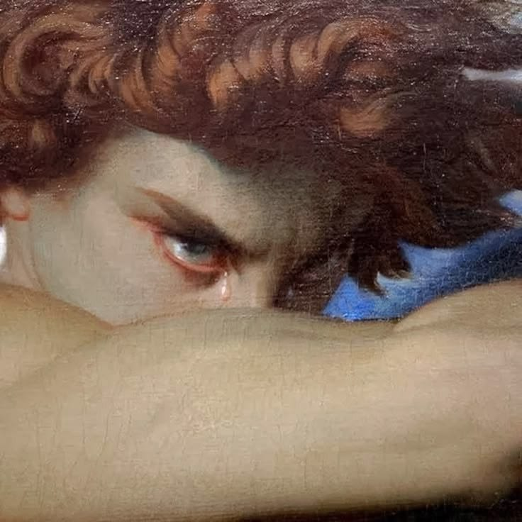
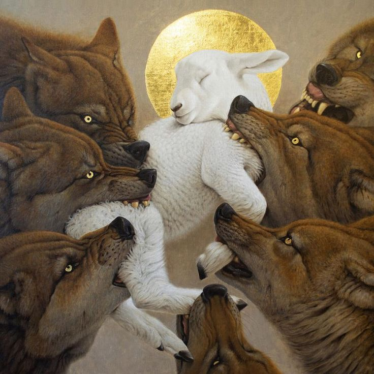
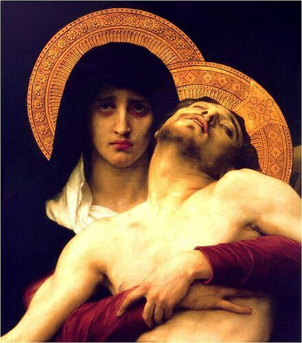
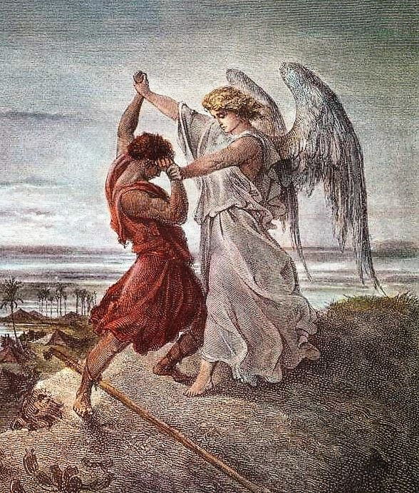

Lokakarya HTML

Lukisan renaisans hasil photoshop.Belajar struktur.
Halaman pertama Pengembangan Situs Web I.
Nama saya Inigo Pedrozza Morette Simamora Saya sedang belajar web.

Lukisan renaisans hasil photoshop.Belajar struktur.

Close-up wajah Lucifer pada lukisan The Fallen Angel karya Alexandre Cabanel.Belajar tampilan.

Agnus, karya Konstantin Korobov.Menguji kualitas.

Pietà (1876), karya William-Adolphe Bouguereau.Dinamika dalam halaman web.

Jacob Wrestling with the Angel (1855), karya Gustave Doré.Guna internet bagi web.